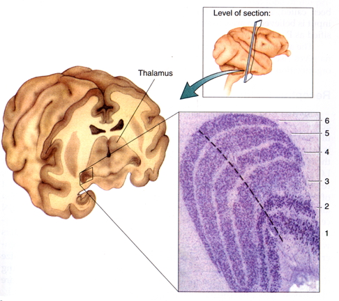
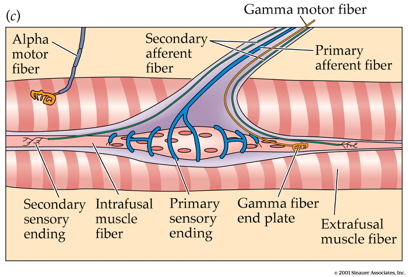

- Wrap up on vision
- The neuroscience of action
- Quiz 2 available Friday
2018-10-16 16:33:21
Today's Topics
The fovea

The fovea
- Central 1-2 deg of visual field
- Aligned with visual axis
- Retinal ganglion cells pushed aside
- Highest acuity vision == best for details
Acuity varies across fovea

Acuity varies across fovea

What part of the skin is like the fovea?
What part of the skin is like the fovea?

Photoreceptors detect light

Photoreceptors detect light
- Rods
- ~120 M/eye
- Mostly in periphery
- Active in low light conditions
- One wavelength range
Photoreceptors detect light
- Cones
- ~5 M/eye
- Mostly in center
- 3 wavelength ranges
Photoreceptors "specialize" in particular wavelengths

Anatomy & Physiology, Connexions Web site. http://cnx.org/content/col11496/1.6/, Jun 19, 2013.
How photoreceptors work
- Outer segment
- Membrane disks
- Photopigments
- Sense light, trigger chemical cascade
- Inner segment
- Synaptic terminal
- Light hyperpolarizes photoreceptor!
- The dark current
Retina
- Physiologically backwards
- How?
- Anatomically inside-out
- How?
Retina
- Physiologically backwards
- Dark current
- Anatomically inside-out
- Photoreceptors at back of eye
Retinal layers

Retinal layers
- From photoreceptors…
- To Bipolar cells
- <-> and Horizontal cells
- To Retinal ganglion cells
- <-> and Amacrine cells
Center-surround receptive fields

Center-surround receptive fields
- Center region
- Excites (or inhibits)
- Surround region
- Does the opposite
- Bipolar cells & Retinal Ganglion cells ->
- Most activated by "donuts" of light/dark
- Local contrast (light/dark differences)
What's a reddish-green look like?

What's a reddish-green look like?
Opponent processing

Opponent processing
- Black vs. white (achromatic)
- Long (red) vs. Medium (green) wavelength cones
- (Long + Medium) vs. Short cones
- Can't really see reddish-green or bluish-yellow
- "Oppose" one another at cellular/circuit level
From eye to brain

From eye to brain
- Retinal ganglion cells
- 2nd/II cranial (optic) nerve
- Optic chiasm (\(\chi\) - asm): Partial crossing of fibers
- Nasal hemiretina (lateral/peripheral visual field) cross
- Left visual field (from L & R retinae) -> right hemisphere & vice versa
- Lateral Geniculate Nucleus (LGN) of thalamus (receives 90% of retinal projections)
From eye to brain
- Hypothalamus
- Suprachiasmatic nucleus (superior to the optic chiasm): Synchronizes day/night cycle with circadian rhythms
- Superior colliculus & brainstem
LGN

LGN
- 6 layers + intralaminar zone
- Parvocellular (small cells): chromatic
- Magnocellular (big cells): achromatic
- Koniocellular (chromatic - short wavelength?)
- Retinotopic map of opposite visual field
From LGN to V1
From LGN to V1
- Via optic radiations
- Primary visual cortex (V1) in occipital lobe
- Create "stria of Gennari" (visible stripe in layer 4)
- Calcarine fissure (medial occiptal lobe) divides lower/upper visual field
Human V1

Measuring retinotopy in V1

Retinotopy in V1
- Fovea overrepresented
- Analogous to somatosensation
- High acuity in fovea vs. lower outside it
- Upper visual field/lower (ventral) V1 and vice versa
V1 has laminar, columnar organization

V1 has laminar, columnar organization
- 6 laminae (layers)
- Input: Layer 4 (remember stria of Gennari?)
- Output: Layers 2-3 (to cortex), 5 (to brainstem), 6 (to LGN)
V1 has laminar, columnar organization
- Columns
- Orientation/angle
- Spatial frequency
The "accidental" discovery of oriented receptive fields in V1
Orientation/angle tuning

From center-surround receptive fields to line detection

Spatial frequency tuning
Low == gist || high == details 
V1 has laminar, columnar organization
- Columns
- Color/wavelength
- Eye of origin, ocular dominance
Ocular dominance columns
Ocular dominance signals retinal disparity
Beyond V1

Beyond V1
- Larger, more complex receptive fields
- Dorsal stream (where/how)
- Toward parietal lobe
- Ventral stream (what)
What is vision for?
- What is it? (form perception)
- Where is it? (space perception)
- How do I get from here to there (action control)
- What time (or time of year) is it?
The Real Reason for Brains
The neuroscience of action
- What types of actions are there?
- How are they produced?
- By the muscles
- By the nervous system
Remember
- Nervous system "output" includes
- Movements
- Autonomic responses
- Endocrine responses
Types of actions

Types of actions
- Reflexes
- Simple, highly stereotyped, unlearned, rapid
- vs. Planned or voluntary actions
- Complex, flexible, acquired, slower
- Discrete (reaching) vs. rhythmic (walking)
- Ballistic (no feedback) vs. controlled (feedback)
Multiple, parallel controllers

Key "nodes" in network
- Primary motor cortex (M1)
- Non-primary motor cortex
- Basal ganglia
- Brain stem
- Cerebellum
- Spinal cord
Muscle classes
- Axial
- Trunk, neck, hips
- Proximal
- Shoulder/elbow, pelvis/knee
- Distal
- Hands/fingers, feet/toes
Muscles

Muscle types
- Smooth
- Arteries, hair follicles, uterus, intestines
- Regulated by ANS (involuntary)
- Striated (striped)
- Skeletal
- Voluntary control, mostly connected to tendons and bones
- Cardiac
Muscle types

How skeletal muscles contract
- Motoneuron (ventral horn of spinal cord)
- Neuromuscular junction
- Releases ACh
From spinal cord to muscle

How skeletal muscles contract
- Motor endplate
- Nicotinic ACh receptor
- Excitatory endplate potential
- Muscle fibers depolarize
- Depolarization spreads along fibers like an action potential
- Sarcomeres are segments of fibers
- Intramuscular stores release Ca++
Motor endplate

How skeletal muscles contract
- Myofibrils (w/in sarcomere)
- Actin & mysosin proteins
- “Molecular gears”
- Bind, move, unbind in presence of Ca++, ATP
Anatomy of muscle fibers

Anatomy of motor endplate

Muscle contraction
Agonist/antagonist muscle pairs

{kind=link}
{kind=link}
{kind=link}
{kind=link}
{kind=link}
Meat preference?
Muscle fiber types
- Fast twitch/fatiguing
- Type II
- White meat
- Slow twitch/fatiguing
- Type I
- Red meat
Muscles are sensory organs, too!

Two muscle fiber types

Two muscle fiber types
- Intrafusal fibers
- Sense length/tension
- Contain muscle spindles linked to Ia afferents
- ennervated by gamma (\(\gamma\)) motor neurons
- Extrafusal fibers
- Generate force
- ennervated by alpha (\(\alpha\)) motor neurons
Next time…
- More on action
References
Dougherty, R. F., Koch, V. M., Brewer, A. A., Fischer, B., Modersitzki, J., & Wandell, B. A. (2003). Visual field representations and locations of visual areas V1/2/3 in human visual cortex. Journal of Vision, 3(10), 1–1. https://doi.org/10.1167/3.10.1
Panichello, M. F., Cheung, O. S., & Bar, M. (2013). Predictive feedback and conscious visual experience. Perception Science, 3, 620. https://doi.org/10.3389/fpsyg.2012.00620